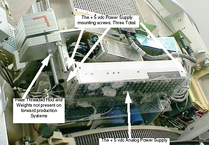
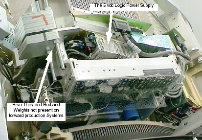
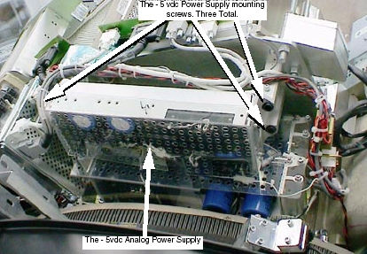
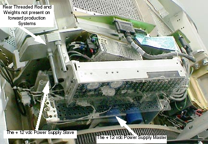
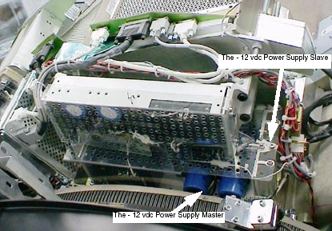
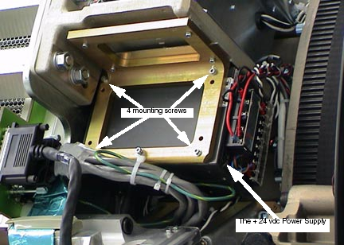

Operating Documentation
Direction 5114045-800, Rev# 10
LightSpeed 4.X Service Information (Advanced)
Operating Documentation |
| Required Persons | Preliminary Reqs | Procedure | Finalization |
|---|---|---|---|
| 1 |
| Last Revised: | March 30, 2004 |
There are several power supplies for the MDAS 16, including: -5VDC analog, +5VDC analog, 5VDC digital, two -12VDC, two +12VDC and 24VDC. To gain access to any of these, perform the following:
| POTENTIAL FOR ELECTROCUTION OR SHOCK. | |
| HAZARDOUS VOLTAGES ARE PRESENT IN THE GANTRY, EVEN WITH ALL STC SERVICE SWITCHES “OFF”. | |
| Servicing of the MDAS 16 should be performed by qualified personnel only. |
| NOTE: | It may be easier to access the power supplies if you remove the gantry top and rear covers. Then tilt the gantry all the way back to 30 degrees. |
Position the cradle in the home position and raise the table to its highest elevation.
Remove gantry right side cover, and turn OFF the Axial and HVDC service switches on the STC backplane.
Remove the gantry left, top and rear covers.
Tilt the gantry 30 degrees forward or backward for easiest access.
| ELECTROCUTION HAZARD | |
| HIGH VOLTAGES PRESENT. | |
| Use proper lockout/tagout procedures before replacing components. See safety menu of Service Document gui for appropriate procedures. |
Perform System Lockout/Tagout procedure.
Rotate gantry so that the DAS assembly is in a position where the power supply can be easily accessed. This could be anywhere between the 9 o’clock and 3 o’clock positions, depending on which power supply is to be replaced and the availability of a stepping stool (to work from the top of the gantry).
| POTENTIAL FOR PERSONAL INJURY. | |
| USE THE ROTATIONAL LOCK TO PREVENT UNCOMMANDED MOVEMENT OF THE GANTRY. | |
| ENSURE GANTRY ROTATIONAL LOCK IS FULLY ENGAGED TO PREVENT UNEXPECTED GANTRY MOTION. See safety menu of Service Document gui for appropriate procedures. |
Lock the gantry in position, using the rotational lock (see “Rotational Locking Pin,” in Equipment Service - Gantry).
The +5 vdc analog power supply is located behind the left DAS chassis.
| ADJUSTMENT OF POWER SUPPLIES REQUIRES THE USE OF AN INSULATED ADJUSTMENT TOOL. | |
| FAILURE TO USE AN INSULATED VOLTAGE ADJUSTMENT "TWEAKER" CAN RESULT IN PERSONAL INJURY AND/OR COMPONENT DAMAGE. | |
| Always use an insulated adjustment tool when servicing the Power SuppLy. |
| Power Supply may be hot to touch. | |
| Use caution to prevent possible burn injury from hot surface contact. | |
| Avoid touching the Power Supply. |
Perform Cover removal and Lockout/Tagout power control per DAS Power Supplies.
Illustration 1: Location of the + 5 vdc Analog Power Supply

Disconnect the rotating power harness as required. Save all hardware for reuse.
Remove the plastic cover by removing four (4) each: 4mm cap screws, flat and lock washers.
Disconnect the AC and DC connectors.
Remove the three (3) 12mm cap screws that secure the power supply to the detector plate. [Two screws are located at one end of the power supply assembly, and the third is at the other end.] Lift the power supply assembly out of the gantry.
Install the power supply assembly to the detector plate, using the three (3) 12 mm cap screws, flat and lock washers. Torque the screws to 66 N-m (48.68 lbs-ft).
Reconnect the supply output and supply power.
Attach the plastic cover to the assembly, using 4mm cap screws, flat and lock washers. Torque the screws to 0.7 N-m (6.2 lbs-in).
Secure the rotating harness cables as before.
Restore power to the gantry and verify power supply output voltage (see Table -1 "Backplane Voltage Test Points” in DAS Power Supplies Checks). Adjust supply output, if necessary.
Reassemble the gantry covers.
The +5 Vdc logic power supply is located behind the left DAS chassis, behind the + 5 vdc analog power supply.
| ADJUSTMENT OF POWER SUPPLIES REQUIRES THE USE OF AN INSULATED ADJUSTMENT TOOL. | |
| FAILURE TO USE AN INSULATED VOLTAGE ADJUSTMENT “TWEAKER” CAN RESULT IN PERSONAL INJURY AND/OR COMPONENT DAMAGE. | |
| Always use an insulated adjustment tool when servicing the Power SupPLY. |
| Power Supply may be hot to touch. | |
| Use caution to prevent possible burn injury from hot surface contact. | |
| Avoid touching the Power Supply. |
Perform Cover removal and Lockout/Tagout power control per “DAS Power Supplies,” in DAS Power Supplies.
Illustration 2: Location of 5 vdc Logic Power Supply

Disconnect the rotating power harness as required. Save all hardware for reuse.
Remove the + 5 vdc analog power supply. See +5 vdc Analog Power Supply.
Disconnect the AC and DC leads at the power supply terminal strips.
Remove the three (3) 4 mm cap screws, flat and lock washers securing the power supply to the detector plate.
Remove the four (4) 4 mm countersunk screws.
Install mounting plate and four (4) 4 mm countersunk screws onto new power supply. Torque to 1.4 N-m (12.4 lbs-in).
Install the new power supply using three (3) 4 mm cap screws, flat and lock washers. Torque to 2.3 N-m (20.4 lbs-in).
Reconnect the AC and DC leads to the power supply terminal strip.
Install the + 5 vdc analog power supply.
Secure the rotating power harness as before.
Restore power to the gantry and verify power supply output voltage (see Table -1 “Backplane Voltage Test Points” in DAS Power Supplies Checks). Adjust supply output, if necessary.
Reassemble the gantry covers.
The -5 volt DC power supply is located behind the right DAS chassis, attached to the detector plate.
| ADJUSTMENT OF POWER SUPPLIES REQUIRES THE USE OF AN INSULATED ADJUSTMENT TOOL. | |
| FAILURE TO USE AN INSULATED VOLTAGE ADJUSTMENT “TWEAKER” CAN RESULT IN PERSONAL INJURY AND/OR COMPONENT DAMAGE. | |
| Always use an insulated adjustment tool when servicing the Power SupPLY. |
| Power Supply may be hot to touch. | |
| Use caution to prevent possible burn injury from hot surface contact. | |
| Avoid touching the Power Supply. |
Perform Cover removal and Lockout/Tagout power control per “DAS Power Supplies,” in DAS Power Supplies.
Illustration 3: Location of the - 5 vdc Analog Power Supply

Disconnect the rotating power harness as required. Save all hardware for reuse.
Remove the power supply’s clear plastic cover by removing four (4) each: 4mm cap screws, flat and lock washers.
Disconnect the AC and DC connectors from the power supply.
Remove the three (3) 12 mm cap screws that are used to mount the power supply to the detector plate. [Two screws are located at one end of the power supply assembly, and the third is at the other end.] Remove the power supply assembly from the gantry.
Mount the new power supply using the three (3) 12 mm cap screws, flat and lock washers. Torque the screws to 66 N-m (48.68 lbs-ft).
Connect the AC and DC connectors.
Attach the plastic cover to the assembly, using 4mm cap screws, flat and lock washers. Torque the screws to 0.7 N-m (6.2 lbs-in).
Secure the rotating harness cables as before.
Restore power to the gantry and verify power supply output voltage (see Table - 1 “Backplane Voltage Test Points” in DAS Power Supplies Checks). Adjust supply output, if necessary.
Reassemble the gantry covers.
The two (2) +12 vdc power supplies are located behind the left DAS chassis, under the + 5 vdc analog and 5 vdc logic power supplies.
| ADJUSTMENT OF POWER SUPPLIES REQUIRES THE USE OF AN INSULATED ADJUSTMENT TOOL. | |
| FAILURE TO USE AN INSULATED VOLTAGE ADJUSTMENT “TWEAKER” CAN RESULT IN PERSONAL INJURY AND/OR COMPONENT DAMAGE. | |
| Always use an insulated adjustment tool when servicing the Power SupPLY. |
| Power Supply may be hot to touch. | |
| Use caution to prevent possible burn injury from hot surface contact. | |
| Avoid touching the Power Supply. |
Perform Cover removal and Lockout/Tagout power control per “DAS Power Supplies,” in DAS Power Supplies.
Illustration 4: Location of +12 vdc Power Supply

Disconnect the rotating power harness as required. Save all hardware for reuse.
Remove the + 5 vdc analog power supply. See “+5 vdc Analog Power Supply,” in +5 vdc Analog Power Supply.
Remove the 5 vdc logic power supply if needed. See “+5 vdc Logic Power Supply,” in +5 vdc Logic Power Supply.
Remove the four (4) 6mm cap screws, flat and lock washers, to remove the clear plastic cover from the power supply assembly.
Disconnect the AC and DC connectors from the power supply.
Remove the four (4) 6mm hex nuts, flat and lock washers that hold the power supply in place.
Lift the power supply assembly off of the threaded rod.
Slide the new power supply onto the threaded rod, and secure with the four (4) 6mm hex nuts, flat and lock washers. Torque to 7.9 N-m (69.92 lbs-in).
STOP! If the inner slave power supply is being replaced, you need to perform the power supply adjustment procedure before you reassemble the gantry. Refer to “DAS Power Supplies,” in DAS Power Suppliesfor specific details.
Reconnect the AC and DC connectors.
Replace the clear plastic cover, using 6mm cap screws, flat and lock washers. Torque screws to 7.9 N-m (69.92 lbs-in).
Restore power to the gantry and verify power supply output voltage (see Table -1 “Backplane Voltage Test Points,” in DAS Power Supplies Checks). Adjust supply output, if necessary.
Reassemble the gantry covers.
The two (2) -12 VDC power supplies are located behind the right DAS chassis, below the - 5 vdc analog power supply.
| ADJUSTMENT OF POWER SUPPLIES REQUIRES THE USE OF AN INSULATED ADJUSTMENT TOOL. | |
| FAILURE TO USE AN INSULATED VOLTAGE ADJUSTMENT “TWEAKER” CAN RESULT IN PERSONAL INJURY AND/OR COMPONENT DAMAGE. | |
| Always use an insulated adjustment tool when servicing the Power SupPLY. |
| Power Supply may be hot to touch. | |
| Use caution to prevent possible burn injury from hot surface contact. | |
| Avoid touching the Power Supply. |
Perform Cover removal and Lockout/Tagout power control per “DAS Power Supplies,” in DAS Power Supplies.
Illustration 5: Location of the - 12 vdc Power Supply

Disconnect the rotating power harness as required. Save all hardware for reuse.
Remove the - 5 vdc analog power supply. See “-5 vdc Power Supply,” in -5 vdc Power Supply.
Remove the four (4) 6mm cap screws, flat and lock washers, to remove the clear plastic cover.
Disconnect the AC and DC connectors from the power supply.
Remove the four (4) 6mm hex nuts, flat and lock washers that hold the power supply in place.
Lift the power supply assembly off of the threaded rod.
Slide the new power supply onto the threaded rod, and secure with the 6mm hex nuts, flat and lock washers. Torque to 7.9 N-m (69.92 lbs-in).
STOP! If the inner slave power supply is being replaced, you need to perform the power supply adjustment procedure before you reassemble the gantry. Refer to “DAS Power Supplies,” in DAS Power Supplies for specific details.
Reconnect the AC and DC connectors.
Replace the clear plastic cover, using the four (4) 6mm cap screws, flat and lock washers. Torque screws to 7.9 N-m (69.92 lbs-in).
Restore power to the gantry and verify power supply output voltage (see Table - 1 “Backplane Voltage Test Points” in DAS Power Supplies Checks). Adjust supply output, if necessary.
Reassemble the gantry covers.
The +24 volt DC power supply is located behind the center DAS chassis.
| ADJUSTMENT OF POWER SUPPLIES REQUIRES THE USE OF AN INSULATED ADJUSTMENT TOOL. | |
| FAILURE TO USE AN INSULATED VOLTAGE ADJUSTMENT “TWEAKER” CAN RESULT IN PERSONAL INJURY AND/OR COMPONENT DAMAGE. | |
| Always use an insulated adjustment tool when servicing the Power SupPLY. |
| Power Supply may be hot to touch. | |
| Use caution to prevent possible burn injury from hot surface contact. | |
| Avoid touching the Power Supply. |
Perform Cover removal and Lockout/Tagout power control per “DAS Power Supplies,” in DAS Power Supplies.
Illustration 6: Location of the + 24 vdc Power Supply

Disconnect the rotating power harness as required. Save all hardware for reuse.
Remove the four (4) 4 mm caps screws, flat and lock washers securing the power supply to the bracket.
Remove the terminal strip safety covers and disconnect the AC and DC leads from the power supply.
Carefully remove the power supply from the gantry.
Install the new power supply in reverse order.
Torque the four (4) 4 mm cap screws, flat and lock washers to 2.3 N-m (20.4 lbs-in).
Restore power to the gantry and verify power supply output voltage (see Table -1 “Backplane Voltage Test Points” in DAS Power Supplies Checks). Adjust supply output, if necessary.
Reassemble the gantry covers.
No finalization required.